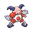
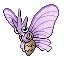
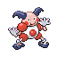
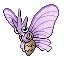

heartgold & SoulSilver

Pokémon HeartGold e Pokémon SoulSilver são remakes dos jogos da segunda geração (Pokémon Gold e Pokémon
Silver),
lançados para o Nintendo DS.
Ambos contam a história da região de Johto, com a possibilidade de
explorar também a região de Kanto após a conclusão da história principal.
Prólogo do jogo
O jogo começa com o Professor Carvalho explicando brevemente o mundo Pokémon e sua jornada como treinador.

Em seguida, você escolhe entre ser um menino (Ethan) ou uma menina (Lyra) e define o nome do seu personagem.


O Professor Carvalho também apresenta o seu rival, que pode ser nomeado (canonicamente chamado de
Silver).
Após essas escolhas, sua aventura começa na tranquila cidade de New Bark, onde sua jornada em Johto se
inicia!
Início do jogo
Você começa em sua casa, onde sua mãe te dá um relógio e te deseja boa sorte. Ao sair, você se encontra com um Maryl. Caso tenha escolhido jogar com
Ethan, Lyra será
a dona desse pokemon e irá até você, se apresentando para o jogador como uma amiga de infancia do protagonista (o mesmo acontece
caso você escolha jogar de Lyra, invertendo os papeis).
Assim que esse encontro acontece, você vai até o laboratório do professor professor-elm, que pedirá para você escolher um pokemon.
Suas opções são os três iniciais de Johto: Cyndaquil (tipo fogo), Chikorita (tipo planta) e Totodile
(tipo água).
Seu rival sempre escolherá o Pokémon com vantagem contra o seu.
Cyndaquil

Chikorita

Totodile
Após receber seu Pokémon, o professor pedirá um favor para você, onde irá encontrar seu rival com um pokemon inicial que ele roubou do
laboratório do professor Elm.
Como ele tem vantagem, é preciso estratégia, mas os Pokémon ainda estão em nível baixo, tornando a
batalha equilibrada.

Depois disso, você voltará para a sua cidade, onde ali seu personagem poderá se preparar para a sua jornada.
A partir daí, sua jornada em Johto começa de verdade, e você poderá desafiar os líderes de ginásio para
se tornar o melhor treinador!
Insígnias e ginásios
As Insígnias de Johto são concedidas após derrotar os líderes de ginásio. São oito no total,
representando diferentes tipos:
Tipo voador,
Tipo inseto,
Tipo normal,
Tipo fantasma,
Tipo lutador,
Tipo aço,
Tipo gelo,
e Tipo dragão.
Após conquistar todas, você poderá desafiar a Liga Pokémon e, mais tarde, até explorar a região de
Kanto!

Ginásio do tipo voador
O ginásio do tipo pedra é o primeiro ginásio que o jogador irá encontrar na sua jornada até a liga indigo. Seu lider é o Brock e ele utiliza apenas dois pokemons. Ao vencer, você é condecorado com a insignia do tipo-pedra.
Time pokemon
Insignía


Ginásio do tipo inseto
O ginásio do tipo pedra é o primeiro ginásio que o jogador irá encontrar na sua jornada até a liga indigo. Seu lider é o Brock e ele utiliza apenas dois pokemons. Ao vencer, você é condecorado com a insignia do tipo-pedra.
Time pokemon
Insignía


Ginásio do tipo elétrico
O ginásio de Vermilion City é liderado por Lt. Surge, um veterano de guerra que usa Pokémon elétricos. Seu time inclui Voltorb, Pikachu e Raichu. A Insígnia Trovão é sua recompensa.
Time pokemon
Insignía


Ginásio do tipo fantasma
O ginásio de Celadon City é liderado por Erika, uma mestre em Pokémon do tipo Planta que também é conhecida por sua paixão por perfumes. Seu time inclui Victreebel, Tangela e Vileplume. A Insígnia Arco-Íris é sua recompensa.
Time pokemon
Insignía


Ginásio do tipo lutador
O ginásio de Fuchsia City é comandado por Koga, um ninja especializado em Pokémon do tipo Veneno. Ele usa truques e fumaça para confundir seus oponentes. Seu time inclui Koffing, Muk e Weezing. A Insígnia Alma é sua recompensa.
Time pokemon
Insignía


Ginásio do tipo psíquico
O ginásio de Saffron City é liderado por Sabrina, uma poderosa médium que treina Pokémon do tipo Psíquico. Ela possui habilidades telecinéticas assustadoras. Seu time inclui Kadabra, Mr. Mime e Alakazam. A Insígnia Marsh é sua recompensa.
Time pokemon
Insignía
 





Ginásio do tipo Fogo
O ginásio de Cinnabar Island é liderado por Blaine, um cientista excêntrico e especialista em Pokémon do tipo Fogo. Seu ginásio é conhecido por seus enigmas. Seu time inclui Growlithe, Ponyta e Arcanine. A Insígnia Vulcão é sua recompensa.
Time pokemon
Insignía


Ginásio do tipo terra
O ginásio de Viridian City é liderado por Giovanni, o chefe da Equipe Rocket. Ele treina Pokémon do tipo Terrestre com táticas implacáveis. Seu time inclui Dugtrio, Nidoqueen e Rhydon. A Insígnia Terra é sua recompensa.